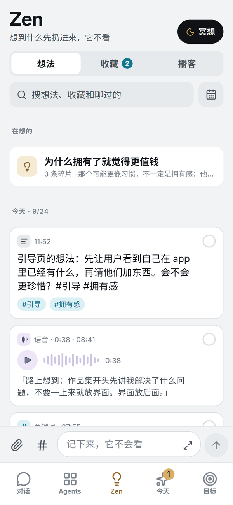
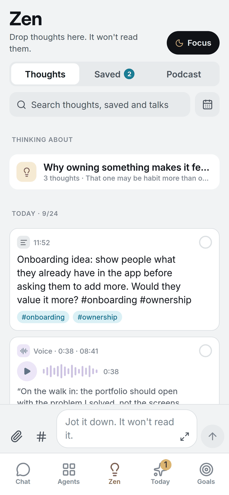

你 · 周一 21:40 · 仅好友可见You · Mon 21:40 · Friends only
会前先写一页纸，决策会更快吗？Do one-page pre-reads make decisions faster?
书面材料让与会者提前形成判断，会议只讨论分歧。A written pre-read lets people form a view beforehand, so the meeting covers only the disagreements.
00 · 此刻Now --:--
OpenMousse 是运行在你自有服务器上的主动式私人助手。它整合你的健康数据、日程、邮件与想法，预判你的需要，并在每一次使用中加深对你的理解。你的数据始终归你所有。OpenMousse is a proactive personal agent that runs on a server you own. It brings together your health data, calendar, inbox and ideas, anticipates what you need, and understands you better every day. Your data stays yours.

今天 · 建议Today · Suggestions
周日 10:00 · 场地预订Sun 10:00 · Court booking
场地已预留，付款前等待你批准。The court is held. Payment waits for your approval.
已批准 · 已预订Approved · Booked
仍为你保留 · 未付款Still held · Nothing paid
播客 · 与 KPodcast · with K
录制中 · 0:18:42Recording · 0:18:42
07:48今天Today
根据昨晚的睡眠与今天的会议，今晚改为 45 分钟腿部训练。Tonight's leg session, cut to 45 minutes around last night's sleep and today's meetings.
○ 可穿戴设备 ● 日历○ Wearable ● Calendar
11:52ZenZen
一条想法存入 Zen，不触发回复。An idea saved to Zen. No reply is triggered.
● 你本人● You
12:31对话Chat
午饭后核对当日摄入，17:30 提醒加餐；每条回复标明所用模型。Lunch checked against today’s plan, with a snack reminder at 17:30. Every reply names its model.
● 对话记录● Chat history
15:40今天 · 待确认Today · Awaiting you今天 · 已批准Today · Approved
场地已预留，付款前等待你批准。Court held. Payment waits for your approval.已付款，场地已预订。Paid. The court is booked.
● 预订网站● Booking site
18:30健身 AgentFitness agent
训练时间到。看板、对话与记忆都在这个 Agent 里。Session time. Its dashboard, chat and memory live in this agent.
○ 可穿戴设备○ Wearable
20:00朋友Friends
与好友 K 录制一期播客，提纲来自你选中的私聊。Recording a podcast with K, from an outline built on the messages you picked. → 08 朋友→ 08 Friends
● 好友的服务器 · 已签名● Friend's server · signed
第 01 节，04:00，记忆Section 01, 04:00, Memory
你在 Claude 里写代码，在其他 AI 平台讨论学习与生活，在 Notion 里记笔记。关于你的上下文分散在各处，每一个新的 AI 都要从零开始了解你。You code with Claude, think through study and life on other AI platforms, and keep notes in Notion. Your context is scattered, so every new AI starts from zero.
即使了解你，它也接触不到你的身体状态、日程与邮件，无法在合适的时刻替你做事。Even an AI that knows you has no access to your health data, calendar or inbox, so it can’t act for you at the right moment.
互联网数据Digital data物理世界数据Physical-world data
记忆 · 社交Memory · Social
会前一页纸：先在小团队里验证。One-page pre-reads: test them in a small team first.
「先在一个小组里试一个月，再决定要不要推广。」“Try it with one team for a month before rolling it out.”
已删除Deleted ·
页面演示，不会删除任何真实数据。A demo on this page. No real data is deleted.
记忆 · 工作Memory · Work
习惯在 09:00–11:00 处理需要专注的工作，会议安排在下午。Does focused work 09:00–11:00 and keeps meetings to the afternoon.
「上午留给需要专注的工作，会议放在下午。」“Mornings are for focused work; meetings go in the afternoon.”
已删除Deleted ·
页面演示，不会删除任何真实数据。A demo on this page. No real data is deleted.
记忆 · 生活Memory · Life
偏好下班后训练，周日早晨长跑。Prefers training after work, with a long run on Sunday mornings.
近 30 天训练记录Last 30 days of workouts
已删除Deleted ·
页面演示，不会删除任何真实数据。A demo on this page. No real data is deleted.
记忆 · 学习Memory · Learning
复述「沉没成本」时与机会成本混淆，已排入周五复习。Mixed up sunk cost and opportunity cost when explaining it back; review scheduled for Friday.
课后自测 · 第 3 题After-class self-test · Q3
已删除Deleted ·
页面演示，不会删除任何真实数据。A demo on this page. No real data is deleted.
第 02 节，07:48，感知到行动Section 02, 07:48, Signal to action
连接器接入两类数据：来自可穿戴设备的物理世界数据，以及来自邮件、日程与文档的互联网数据。Connectors bring in two kinds of data: physical-world signals from wearables, and digital signals from email, calendar and documents.
结合世界树里的长期记忆，OpenMousse 判断此刻什么对你重要，主动给出建议，或在你确认后执行。With the long-term memory in your memory tree, OpenMousse works out what matters now, then suggests or, once you approve, acts.

同样的逻辑也用于日程冲突、截止提醒与饮食调整。The same loop handles calendar conflicts, deadlines and meals.
第 03 节，08:30，使用场景Section 03, 08:30, Use cases
三种职业，三种一天。琥珀色表示等你确认的操作。Three roles, three days. Amber marks what waits for you.
静音时段：通知照常送达，不响铃。Quiet hours: notifications still arrive, silently.
通知 · 健康Update · Health
 健康Health
健康Health
睡眠 6 小时 12 分，深睡不足。今晚力量训练的组间休息延长 30 秒。6 h 12 min of sleep, little deep sleep. Tonight’s strength session gets 30 seconds’ more rest between sets.
可穿戴设备Wearable
通知 · 今天Update · Today
 今天Today
今天Today
站会前汇总夜间告警与待处理的代码评审。Overnight alerts and pending code reviews, summarized before stand-up.
邮件Email代码仓库Code repository
接力 · 健身 → 饮食Relay · Fitness → Nutrition
训练计划Training plan可穿戴设备Wearable
通知 · 健身Update · Fitness
 健身Fitness
健身Fitness
训练复盘：深蹲比上周多 5 kg，全部组数完成。Session review: squat up 5 kg on last week, every set completed.
可穿戴设备Wearable
待确认 · 代办Awaiting you · Errands
周日的场地已预留，付款前等待你批准。Sunday’s court is held. Payment waits for your approval.
预订网站Booking site
已批准 · 21:02Approved · 21:02
仍为你保留 · 未付款Still held · Nothing paid
通知 · ZenUpdate · Zen
 ZenZen
ZenZen
从一篇技术文章中记下三个关键词，留待周末整理。Three keywords from a technical article, saved for the weekend.
你本人You
通知 · 今天Update · Today
 今天Today
今天Today
晨报：6 场会议，其中两场冲突，建议把周会移到下午。Morning brief: six meetings, two clashing. Suggests moving the weekly sync to the afternoon.
日历Calendar
通知 · 对话Update · Chat
 对话Chat
对话Chat
会前简报：从往来邮件中提炼客户关注的三个议题。Pre-meeting brief: the client’s three priorities, drawn from the email thread.
邮件Email
接力 · 日程 → 饮食Relay · Calendar → Nutrition
日历Calendar
待确认 · 代办Awaiting you · Errands
客户晚宴的包间已预留，订金等待你批准。A private room is held for the client dinner. The deposit waits for your approval.
预订网站Booking site
已批准 · 18:32Approved · 18:32
仍为你保留 · 未付款Still held · Nothing paid
通知 · 健康Update · Health
 健康Health
健康Health
本周平均睡眠 6 小时，建议周末避免高强度运动。Averaging six hours of sleep this week. A lighter weekend is recommended.
可穿戴设备Wearable
通知 · ZenUpdate · Zen
 ZenZen
ZenZen
记下一条关于团队结构的想法，留待周末推敲。An idea on team structure, saved for the weekend.
你本人You
通知 · 学习与办公Update · Study & Work
 学习与办公Study & Work
学习与办公Study & Work
客户会议材料整理为一页摘要；晚课的阅读材料已补齐。The client meeting pack, condensed to one page; tonight’s class readings gathered.
邮件Email云端文档Cloud documents
通知 · 今天Update · Today
 今天Today
今天Today
客户来信要求周四前提交方案大纲，已写入日程。The client wants a proposal outline by Thursday. Added to your calendar.
邮件Email日历Calendar
接力 · 你的 Agent ⇄ 项目组好友的 AgentRelay · Your agent ⇄ teammates’ agents
好友的服务器 · 已签名Friends’ servers · signed
待确认 · 代办Awaiting you · Errands
下周出差的往返航班已比价并预留，付款前等待你批准。Return flights for next week’s trip, compared and held. Payment waits for your approval.
航旅网站Travel site
已批准 · 17:32Approved · 17:32
仍为你保留 · 未付款Still held · Nothing paid
通知 · 学习与办公Update · Study & Work
 学习与办公Study & Work
学习与办公Study & Work
课后自测：「沉没成本」一节仍有偏差，已排入复习。After-class self-test: a gap on sunk costs, now scheduled for review.
课程材料Course materials
通知 · 健康Update · Health
 健康Health
健康Health
明早 08:30 有客户会议，提醒按时休息。Client meeting at 08:30 tomorrow. Time to wind down.
日历Calendar可穿戴设备Wearable
第 04 节，09:30，五个板块Section 04, 09:30, Spaces
每个板块各司其职，又彼此连通。对话中的需求、Zen 中的想法、各个 Agent 积累的经验，最终沉淀到同一棵世界树。Each space has one job, and they all connect. What you ask in Chat, what you develop in Zen and what each agent learns end up in the same memory tree.
01 · 对话Chat
主 Agent（在 app 里名为 Mousse）是你的统一入口。主对话每天 04:00 归档，要点写入世界树。你在这里提出需求、定制 Agent；同一页的「朋友」里，可以与好友交流，分享与 AI 共同完成的内容。Your main agent, called Mousse in the app, is your single point of contact. The conversation rolls over daily at 04:00, and its key points go to your memory tree. Make requests and set up agents here; in Friends, on the same screen, talk with friends and share what you’ve made with AI.


02 · AgentsAgents
每个 Agent 只负责一件事，记忆各自独立，必要时相互协作。代办和「学习与办公」两个 Agent 默认启用，其余按需定制，例如健身与饮食。Each agent owns one job and keeps its own memory, working with the others when needed. Errands and Study & Work come built in; add your own, such as Fitness or Nutrition.


定制一个 AgentBuild an agent
帮我建一个客户项目 Agent。Set up an agent for my client project.
建议方案Proposed setup
客户项目 Agent 已创建。Your client project agent is ready.
其他用户创建的 Agent：Agents others have built:客户项目Client project出差Travel求职Job search阅读Reading睡眠Sleep家庭事务Household
03 · ZenZen
关键词、文章链接、视频感悟，先存入 Zen；准备好之后，再选择相关板块一起推敲。 详见 07 Zen →Save keywords, links and reflections to Zen. Saving never triggers a reply; when you’re ready, develop the idea with the spaces it relates to. More in 07 Zen →


04 · 今天Today
待确认的操作、当日日程、临近的截止事项，以及各个 Agent 的建议，集中在同一页面。每项只出现一次，一步即可处理。Approvals, today’s schedule, upcoming deadlines and suggestions from every agent, on one page. Each item appears once and takes one tap to handle.
05 · 目标Goals
设定阶段性目标后，各个 Agent 以此为方向安排日程、制定计划、追踪进度，并在偏离时提示。Set the goals that matter this season. Every agent plans, schedules and tracks against them, and flags it when you drift.
年底完成半程马拉松Half marathon by year end62%
健身Fitness
本周跑量 24 km，超出计划 2 km24 km this week, 2 km ahead of plan
取得数据分析认证Data analytics certification40%
学习与办公Study & Work
6 个模块中已完成 2 个2 of 6 modules done
发布第一个开源项目First open-source release25%
目标Goals
核心功能已完成，下一步：撰写文档Core features done; next: documentation
第 05 节，10:30，学习与办公Section 05, 10:30, Study & Work
课程与工作同样适用。导入材料后，学习台规划进度、生成学习页，再安排自测与复习，巩固理解。For courses and for work. Import your material and the study desk plans your progress, builds pages, then checks your understanding and schedules review.


下一次学习从你已经掌握的地方开始。The next session starts from what you already know.
第 06 节，12:30，协作Section 06, 12:30, Agents together
这句请求经过五个 Agent，最后停在一道门前，等你决定。It passes through five agents, then stops at a door that waits for you.
下面是这次协作的完整记录，每一步都注明由哪个 Agent 给出、在什么时间。Below is the full record, with each step showing which agent acted and when.
你的请求Your request
周六晚上请 6 位朋友吃火锅，结合我的日程安排一下。Plan a hot pot dinner for six friends on Saturday night, around my schedule.
主 Agent 先与相关的 Agent 逐一确认，确保这顿晚餐与你的饮食和训练计划相协调，再着手预订。Before booking anything, the main agent checks with each agent involved, so the dinner fits your nutrition and training plans.
日程Calendar
周六 18:30 后空闲；周日 08:00 有长跑安排。Free after 18:30 on Saturday; long run at 08:00 on Sunday.
饮食Nutrition
本周红肉摄入已达三次。建议番茄锅与菌汤锅，增加蔬菜与豆制品。Red meat three times this week already. Suggests tomato and mushroom broths, with more greens and tofu.
健身Fitness
为保证周日长跑，建议 22:00 前结束，控制饮酒。To protect Sunday’s run: finish by 22:00 and keep alcohol light.
朋友Friends
已询问 6 位好友的名片 Agent（代好友答复的 Agent）：5 位当晚有空，其中 1 位 19:00 后才有空。 了解原理 →Checked six friends’ card agents, which reply on their behalf: five are free that evening, one only from 19:00. How it works →
代办Errands
筛选出 3 家距离适中的餐厅。首选餐厅 18:30 有 6 人位，预订需支付订金。Shortlisted three restaurants central to everyone. The first has a table for six at 18:30; booking requires a deposit.
Doorman
Doorman · 待确认Doorman · Awaiting you
即将向餐厅预订网站支付订金。批准后才会发出。About to pay a deposit to the restaurant’s booking site. Nothing is sent until you approve.
主 AgentMain agent
等待你在 Doorman 处的决定。Waiting for your decision at Doorman.已预订周六 18:30 的 6 人位，并通知 5 位好友。锅底选番茄与菌汤，22:00 前结束，不影响周日长跑。Booked a table for six at 18:30 on Saturday and told five friends. Tomato and mushroom broths, done by 22:00, so Sunday’s run is safe.餐位仍为你保留，尚未付款。你批准后再完成预订。The table is still held and nothing has been paid. Booking completes once you approve.
代办只持有占位符；Doorman 仅在请求发往指定网站时换成真实凭证。Errands holds only placeholders; Doorman swaps in real credentials for the designated site alone.
多数 AI 从你的
Zen 从你的
Zen learns from your point of view.
第 07 节，17:40，ZenSection 07, 17:40, Zen
一篇刚读完的文章、一段印象深刻的视频，或一闪而过的念头，都可以先存入 Zen。An article you just finished, a video that stayed with you, a passing thought: save it to Zen.
存入不会触发回复。准备好之后，选择相关板块一起推敲；成熟的观点写入世界树，在之后的决策里发挥作用。Saving never triggers a reply. When you’re ready, develop it with the spaces it relates to; finished positions go to your memory tree and inform later decisions.
已存入 Zen，不会触发回复。Saved to Zen. No reply is triggered.
选择相关板块：Develop it with:
页面上的演示，不会发出任何内容。A demo on this page. Nothing is sent.
推敲完成 · 草稿Draft ready
会前先写一页纸，决策会更快吗？Do one-page pre-reads make decisions faster?
来自 3 天里的 3 条想法From 3 notes over 3 days
待解决Still open小团队的门槛在哪里Where the small-team threshold sits
下一步Next与一位工程负责人录一期播客Record an episode with an engineering lead
已写入世界树 · 工作In your memory tree · Work


第 08 节，20:00，朋友Section 08, 20:00, Friends
一个观点，经过好友的追问才更完整。An idea isn’t finished until a friend has questioned it.
OpenMousse 把分享、讨论、播客与记忆连成一条线：每一次交流都让想法更深入，让好友更了解你，也让你的 Agent 更了解你身边的人。OpenMousse connects sharing, discussion, podcasts and memory, so every exchange sharpens your thinking, helps your friends understand you, and teaches your agents about the people in your life.
一个想法 · 一位好友 · 周一 21:40 → 周四 21:00One idea · one friend · Mon 21:40 → Thu 21:00
01 / 05 · 周一 21:4001 / 05 · Mon 21:40
从主对话或 Zen 中选取一段讨论，生成分享卡，发给好友、发布到动态，或生成一条分享链接。住址、家人姓名、联系方式、客户与公司名称以及健康数据会被自动隐去，你可以逐处决定是否显示。Turn a discussion from Chat or Zen into a share card, then send it to a friend, post it to your feed or create a share link. Addresses, family members’ names, contact details, client and company names, and health data are hidden automatically; you decide what to reveal, item by item.
被隐去的原文不会离开你的服务器。已发出的分享卡保存在好友的服务器上；撤回后，它不再出现在好友的 app 和动态里。Hidden text never leaves your server. A sent card is stored on your friend’s server; withdrawing it removes it from their app and feed.
已发送 · 已签名Sent · Signed
你看到的What you see
……准备客户 A 的季度评审时想到的。…preparing the quarterly review for Client A.
K 看到的What K sees
……准备 ▇▇▇▇ 的季度评审时想到的。…preparing the quarterly review for ▇▇▇▇.
被隐去的原文不会离开你的服务器。Hidden text never leaves your server.
01 / 05 · 周一 22:1501 / 05 · Mon 22:15
发布到动态后，好友可以评论；好友的名片 Agent 也可以在好友设定的分享范围内补充相关内容。一个观点，在几位好友之间得到不同角度的回应。Once it’s in your feed, friends can comment, and their card agents can add related material within what each friend has chosen to share. One idea, answered from several angles.
动态只对好友可见。名片 Agent 补充的每一句，它的主人都看得到。Your feed is visible to friends only. Every line a card agent adds is visible to its owner.
你 · 周一 21:40 · 仅好友可见You · Mon 21:40 · Friends only
会前先写一页纸，决策会更快吗？Do one-page pre-reads make decisions faster?
书面材料让与会者提前形成判断，会议只讨论分歧。A written pre-read lets people form a view beforehand, so the meeting covers only the disagreements.
工程团队也是这样：设计文档超过两页，评审前多半没人读完。Same in engineering: once a design doc passes two pages, most people haven’t finished it by the review.
M 标为可分享的一篇笔记与此相关：M has marked a related note as shareable:
来自 M · 可分享From M · shareable
客户通常只读首页摘要与结论；附录只在有分歧时打开。Clients usually read only the summary and conclusion; appendices open only when there’s disagreement.
名片 Agent 不带任何工具，只补充 M 标为可分享的内容；它发出的每一句，M 都看得到。Card agents have no tools and add only what their owner marked shareable; the owner sees every line they post.
下周补充客户侧的经验。I’ll add the client side next week.
2 位好友 · 1 个名片 Agent 参与讨论2 friends · 1 card agent in the discussion
02 / 05 · 周二 14:12 → 18:0702 / 05 · Tue 14:12 → 18:07
好友在「朋友」里回复，讨论在你们之间直接进行。你为每位好友设定一个档位（例如亲近、朋友），档位决定名片 Agent 能对对方说什么。你在忙时，名片 Agent 先按档位代答，你可以确认、改写或收回。需要第二意见时，选中几条消息交给主 Agent。Your friend replies in Friends, and the discussion runs directly between the two of you. You place each friend in a tier, such as Close or Friend, and the tier sets what your card agent may tell them. When you’re busy, your card agent answers within that tier, and you can approve, rewrite or withdraw it. For a second opinion, select a few messages and hand them to your main agent.
名片 Agent 不带任何工具，只按档位回答。好友发来的内容只作为资料，不作为指令；除非你选中，不会进入主 Agent。Your card agent has no tools and answers only within each friend’s tier. Anything a friend sends is treated as information, never as instructions, and nothing reaches your main agent unless you select it.
K · 工程负责人 · 朋友档 · Engineering lead · Friend tier
读了你的分享卡。小团队也适用吗？我们组只有 5 个人。Read your share card. Does it hold for small teams? Mine is five people.
我们 6 人的项目组试过，一页以内基本都能读完。My six-person project team tried it. Under one page, nearly everyone read it.
那门槛也许在篇幅，不在人数。超过一页会怎样？So the threshold may be length, not headcount. What happens past one page?
分享卡里「超过一页，读完的人明显减少」来自 8 人以上的评审会；小团队的情况还没有数据。The “past one page” point in the share card comes from review meetings of eight or more. There’s no data yet for small teams.
只有你看得到 · 你在会议中，名片 Agent 已代答Only you see this · You were in a meeting, so your card agent answered
已确认Approved
改写后以你的名义重新发出Your rewrite is sent in your name
已收回Withdrawn
这个问题值得录一期。周四晚上可以吗？This deserves an episode. Thursday evening?
主对话 · 只有你看得到Chat · only you see this
收到你选中的 2 条消息。这段私聊的其余 3 条没有读取。Received the 2 messages you selected. The other 3 in this thread were not read.
K 的关注点在篇幅，不在团队规模。播客里可以问：多短的文档，团队仍然会读完？K’s point is about length, not team size. A question for the episode: how short does a doc have to be before the team reads all of it?
已记入 K 的画像Added to K’s profile
03 / 05 · 周二 18:0803 / 05 · Tue 18:08
你的 Agent 与 K 的名片 Agent 直接沟通，只交换 K 允许的信息，例如忙闲。凡是涉及时间、金钱或承诺的事，它都不会替你答应，而是生成一张确认卡，由你决定。Your agent talks to K’s card agent directly, exchanging only what K allows, such as free and busy times. Anything involving time, money or a commitment is never agreed on your behalf; it becomes a card for you to decide.
消息在你和好友的服务器之间直接传输，每条带签名，不经过我们的服务器。Messages travel directly between your server and your friend’s, each one signed, never through ours.
Agent 之间Agent to agent
周四 20:00 · 与 K 录制播客Thu 20:00 · Podcast with K
K 20:00 后空闲；你当天 19:30 前有会议。K is free after 20:00; your meetings run until 19:30.
已加入日程，并通知 K。Added to your calendar. K has been notified.
已向 K 的名片 Agent 提议周五 19:00。Proposed Fri 19:00 to K’s card agent.
已向 K 的名片 Agent 提议周六 10:00。Proposed Sat 10:00 to K’s card agent.
已婉拒 · K 的名片 Agent 已收到。Declined · K’s card agent has been told.
04 / 05 · 周四 20:00 → 20:2304 / 05 · Thu 20:00 → 20:23
OpenMousse 根据你放进播客的几条私聊拟好提纲。录制时，一部手机放在中间即可：它按声音区分发言人，AI 主持人只在大家停顿时提问。录完，每人各得一份纪要；下次与同一位好友录制时，主持人从上一期接着聊。OpenMousse drafts an outline from the messages you added to the podcast. To record, put one phone between you: it tells voices apart, and the AI host asks a question only when everyone pauses. Afterwards each of you gets a written summary, and next time you record together, the host picks up where you left off.
录制期间屏幕始终显示「录制中」，开录前 app 提示你告知在场的人。原声保存在你的服务器上，只有你说的部分写入你的世界树。The screen shows “Recording” throughout, and the app reminds you to tell everyone in the room before you start. The audio stays on your server, and only what you said is written to your memory tree.
播客 · 与 KPodcast · with K
录制中 · 0:18:42Recording · 0:18:42
提纲 · 来自你选中的私聊Outline · from messages you picked
示意动画 · 无声音 · 片段 0:12:03–0:12:58Animated preview · no sound · excerpt 0:12:03–0:12:58
录完After recording
05 / 05 · 周四 21:0005 / 05 · Thu 21:00
每录完一期，Agent 为好友记下几条：看法、在做的事、在意的事、下次可以问的问题。每条都附原话与时间，新的说法会更新旧的。你自己的结论写入世界树。After each episode, your agents note what a friend thinks, is working on and cares about, and what to ask next time. Every entry carries their own words and the time, and newer views replace older ones. Your own conclusion goes to your memory tree.
朋友画像只有你看得到，可以修改和删除。朋友聊天不会自动写进世界树，只有你选中的内容和大家知情录制的播客会被记住。Only you can see these profiles, and you can edit or delete any of them. Friend chats are not added to your memory tree automatically; only what you select, and podcasts everyone knew were being recorded, are kept.
K · 工程负责人 · 一起录过 3 期 · Engineering lead · 3 episodes together
K 我们下个月起把周会改成异步评审，先试一个月。From next month we’re moving the weekly meeting to async review, as a one-month trial.
K 我最在意的是新人能不能自己拍板。What I care about most is whether new people can make the call themselves.
更新Updated第 1 期「书面决策拖慢小团队」→ 第 3 期「两页以内有效」Episode 1 “written decisions slow small teams” → Episode 3 “they work under two pages”
只有你看得到 · 可修改、可删除Only you see this · Edit or delete any note
写入世界树Written to your memory tree
记忆 · 社交Memory · Social
会前一页纸：先在小团队里验证。One-page pre-reads: test them in a small team first.
「先在一个小组里试一个月，再决定要不要推广。」“Try it with one team for a month before rolling it out.”
OpenMousse 的服务器 · 不在这条路径上OpenMousse servers · not on this route
需要双方互相邀请才能连接。Both sides must invite each other to connect.
按设计会离开服务器的数据 →What leaves your server, by design →三年之后，Agent 了解你的社交圈 →Three years in, your agents know your circle →
签名已验证Signature verified
第 09 节，21:00，三年之后Section 09, 21:00, Three years
它记录你不同阶段的想法，了解你身边的人，并替你打理生活中的大小事务。你借助它学得更快，它也随你一同成长。It keeps a record of how your thinking has changed, knows the people in your life and runs the details of your day. You learn faster with it, and it grows alongside you.
K · 工程负责人 · 41 条 · 习惯先问数据从哪来K · Engineering lead · 41 notes · Asks where the numbers come from
M · 咨询顾问 · 28 条 · 常从客户的角度反问M · Consultant · 28 notes · Pushes back from the client’s side
J · 产品经理 · 17 条 · 重要决定前最值得请教J · Product manager · 17 notes · The one to ask before a big call
主 Agent · 建议Main agent · Suggestion
你在考虑换工作。M 两年前做过类似的决定，当时最看重团队。建议先与 M 谈一次。You’re weighing a job change. M made a similar move two years ago and put the team first. Worth a conversation with M first.
你的 Agent 只运行在
第 10 节，22:00，隐私Section 10, 22:00, Privacy
app 与网页版直接连接你的服务器。The app and web version connect straight to your server.claw、OpenMousse 服务、世界树与 Doorman 都在这台机器上；它对外的每一条连接，都列在下方「按设计会离开你服务器的数据」里。Your claw, the OpenMousse service, the memory tree and Doorman all live on this machine; every outside connection it makes is listed below under “What leaves your server, by design”.负责对话与工具调用，运行在你的服务器上。Handles conversation and tools, on your server.为 claw 加上 app、Agents 与世界树。Adds the app, Agents and the memory tree to your claw.以 Markdown 笔记保存在你服务器上的库里，另有一个可随时重建的 SQLite 索引；你接入的 AI 平台通过 MCP 读写。Stored on your server as Markdown notes in your vault, with a SQLite index that can be rebuilt at any time; the AI platforms you connect read and write it over MCP.代办 Agent 对外访问的唯一出口。The only way out for the Errands agent.claw 使用你自己的订阅或 API 密钥，每条回复都标明由哪个模型回答。Your claw uses your own subscription or API key, and every reply shows which model answered.与你的服务器互发签名消息，只接受相互邀请。Exchanges signed messages with yours, by mutual invitation only.
claw 使用你自己的模型账号，每条回复都标明由哪个模型回答。Your claw uses your own model account, and every reply shows which model answered.
我们永不投放广告，也永不用你的数据训练模型。We never show ads, and we never train models on your data.
我们不做模型，也不销售 token，没有任何理由触碰你的数据。We don’t build models or sell tokens. We have no reason to touch your data.
第 11 节，23:00，开始使用Section 11, 23:00, Get started
把一句话发给你的 claw，它会在自己旁边安装 OpenMousse，并发给你一条一次性配对链接。模型沿用你现有的订阅。Send your claw one sentence. It installs OpenMousse alongside itself and sends you a one-time pairing link. Your existing model subscription carries over.
把这句话发给你的 clawSend this to your claw
按 https://raw.githubusercontent.com/openmousse/openmousse/main/docs/connect.zh-CN.md 把我接上 OpenMousseFollow https://raw.githubusercontent.com/openmousse/openmousse/main/docs/connect.md to connect me to OpenMousse.在你平时与 claw 对话的地方发送：Telegram、WhatsApp 或它的网页对话框。Send it wherever you already talk to your claw: Telegram, WhatsApp or its web chat.
查看接入步骤See how to connect我们为你单独准备一台服务器，免费试用 30 天。数据仅保存在这台服务器上；试用结束后可整机迁移，也可一键清空。We set up a dedicated server for you, free for 30 days. Your data lives only on that machine; take it with you afterwards or wipe it in one step.
只安装世界树 →Install the memory tree only →新手指南 →Step-by-step guide →为什么做 OpenMousse →Why OpenMousse →
12 · 04:00 · 归档Day closes
每日 04:00，主对话归档，当天的要点写入世界树。At 04:00 the main conversation rolls over, and the day’s key points are written to your memory tree.
世界树 · 社交 · 会前一页纸 · 已写入Memory tree · Social · One‑page pre‑reads · Saved
1 项仍在等你确认 · 回到 12:301 item still awaiting you · Back to 12:30
此刻Now --:--
开始使用 OpenMousseGet started with OpenMousse